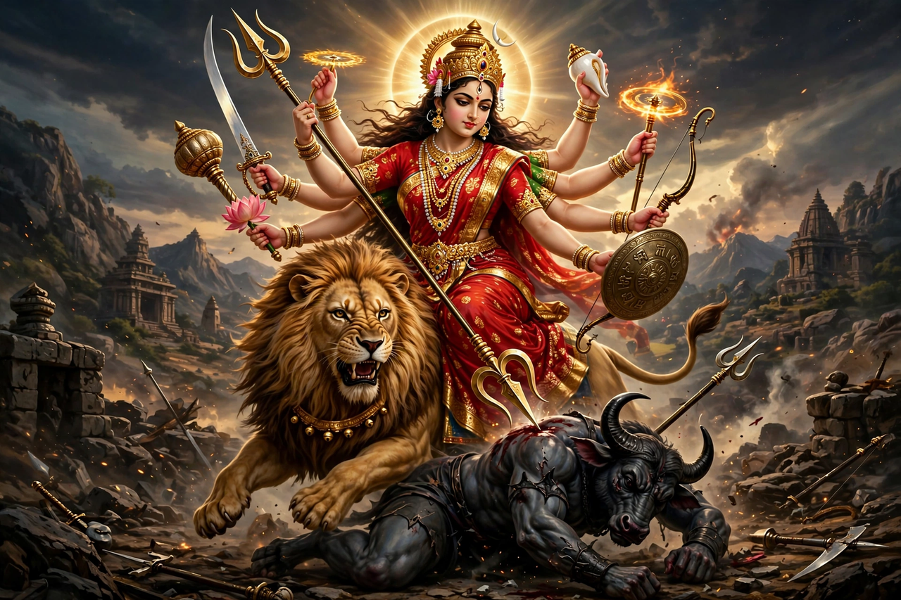

From Wikipedia, the free encyclopedia
| Durga | |
|---|---|
| Affiliation | Hinduism; supreme goddess (in Shaktism), warrior form of the Divine Mother |
| Consort | Shiva (as Parvati, in many traditions) |
| Mount | Lion or tiger |
| Festivals | Durga Puja; Navaratri |
| Known for | Slaying the buffalo demon Mahishasura |
| Weapons | Weapons of all the gods, including Shiva's trident and Vishnu's discus |

Durga (Sanskrit: दुर्गा, "the invincible" or "the inaccessible") is a principal goddess of Hinduism, worshipped as a warrior form of the supreme feminine power — Shakti — and, in the Shakta tradition, as the ultimate reality itself. Created from the combined energies of the gods to destroy the buffalo demon Mahishasura, whom no male god or man could kill, she rides a lion or tiger into battle, her many arms bearing the weapons of all the gods. Her autumn festival, Durga Puja, is among the greatest public celebrations of eastern India, especially Bengal, and she is honoured throughout the nine nights of Navaratri.
The Devi Mahatmyam (part of the Markandeya Purana, and the central scripture of goddess worship) tells how the buffalo demon Mahishasura, having won a boon that no man or god could kill him, drove the gods from heaven. Their combined fury and energy coalesced into a goddess of blazing light: Shiva gave his trident, Vishnu his discus, Indra his thunderbolt, and the Himalaya a lion for her mount. After a battle of nine nights, in which the demon changed shape repeatedly, Durga slew him as he emerged half-transformed from the buffalo's neck — earning the title Mahishasuramardini, "Slayer of the Buffalo Demon".
Durga is both the fierce warrior and the gracious mother; the Devi Mahatmyam also celebrates her as the cosmic power behind creation itself. She is closely identified with Parvati, Shiva's wife, and with the darker goddess Kali, who in some accounts springs from Durga's forehead in battle. The nine nights of Navaratri may honour nine forms of the goddess (Navadurga), and traditions vary by region: in Bengal she comes as a daughter returning to her parental home, accompanied by her children Lakshmi, Saraswati, Ganesha and Kartikeya, while her victory is also celebrated as the god Rama's triumph during the same season.
For Durga Puja, artisans of Kumartuli in Kolkata and countless other workshops model elaborate clay images of the goddess and her family, installed in temporary pavilions (pandals) that range from neighbourhood shrines to vast themed spectacles drawing millions of visitors. After days of ritual, feasting and cultural performance, the images are immersed in rivers (visarjan) to return the goddess to her divine home. UNESCO inscribed Kolkata's Durga Puja on its Representative List of the Intangible Cultural Heritage of Humanity in 2021.
Hinduism · Kali · Shiva · Vishnu · Lakshmi · Hindu mythology